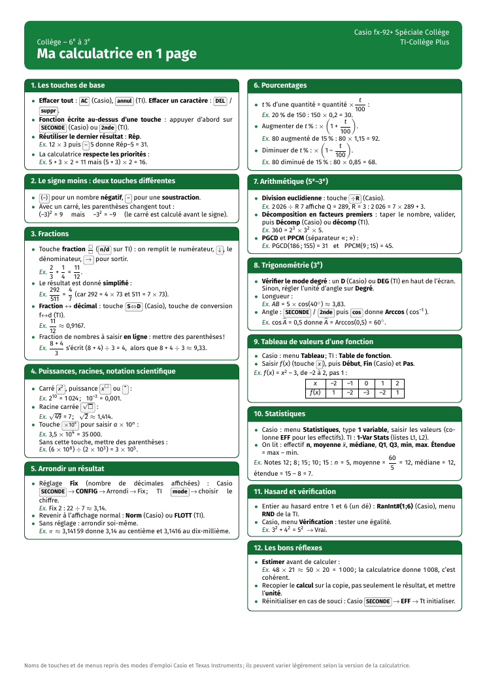
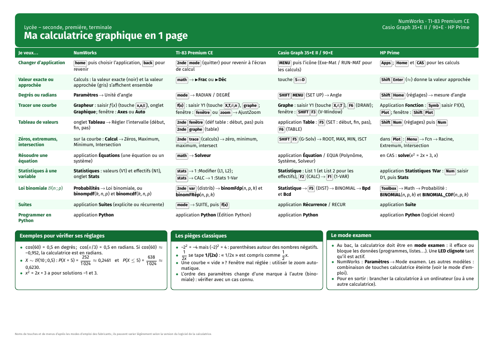

Comment s'en servir ?Chaque guide tient sur une seule page à imprimer et à garder dans le cahier. Il donne la manipulation et un exemple pour vérifier que l'on a bien tapé. Les noms des touches peuvent changer un peu selon la version de la calculatrice : en cas de doute, voir le mode d'emploi.

Collège 6e à 3e
Casio fx-92+ Spéciale Collège et TI-Collège Plus
Touches de base, signe moins, fractions, puissances, arrondis, pourcentages, arithmétique, trigonométrie, tableau de valeurs, statistiques. Chaque manipulation avec un exemple.
Ouvrir le guide (PDF, 1 page, A4 portrait)
Lycée seconde à terminale
NumWorks, TI-83 Premium CE, Casio Graph 35+E II / 90+E, HP Prime
Un tableau « Je veux… » : valeur exacte, degrés ou radians, courbes, tableau de valeurs, zéros et extremums, équations, statistiques, loi binomiale, suites, Python, mode examen.
Ouvrir le guide (PDF, 1 page, A4 paysage)
Modes d'emploi officiels